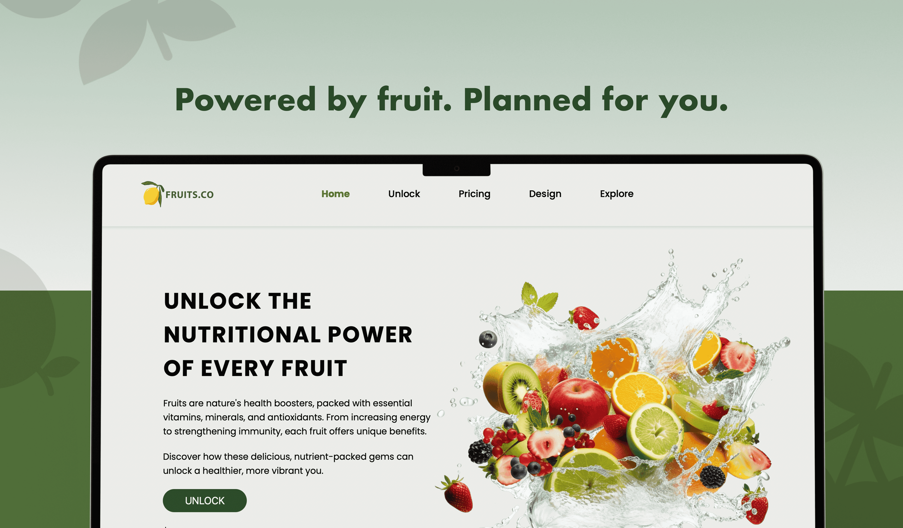
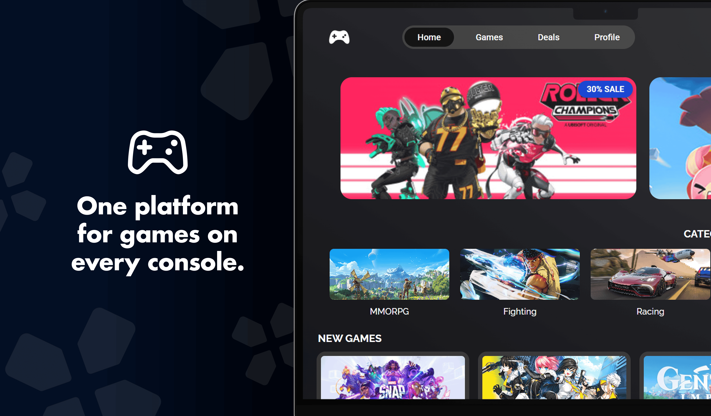
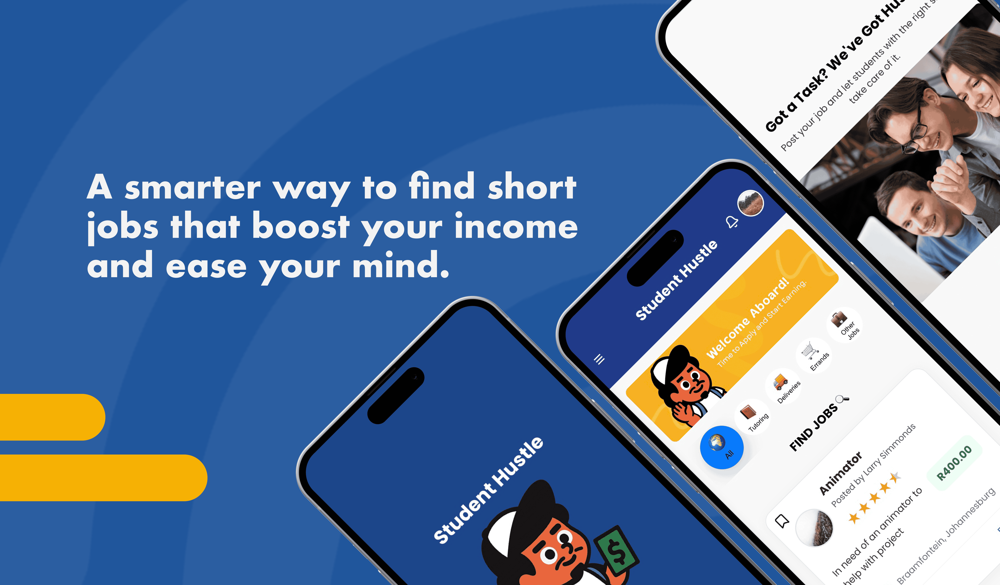

Projects that reflect my process—from asking the right questions to designing the right solutions.
Fruits Corp
An e-commerce platform helping users select fruit-based diet plans with
credible content and guidance. Includes a D3.js visualization to show
weight trends and support informed choices.

Raw Games
An e-commerce platform for gamers to explore and purchase titles with
real API data and simulated pricing. Features filters to personalize
browsing and make game discovery intuitive.

Student Hustle
A React-based web application connecting university and college students
with flexible, short-term job opportunities. Designed for the South
African context, the platform supports student income while helping
clients find reliable assistance.

More Projects
Here is a selection of additional projects that highlight my UI/UX design
approach, problem-solving skills, and attention to creating intuitive,
user-centered experiences.